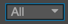

控制台（Console）

控制台会显示报错、警告或其他 Cocos Creator 编辑器和引擎生成的日志信息。不同重要级别的信息会以不同颜色显示：
- 日志（Log）：灰色文字，通常用来显示正在进行的操作。
- 提示（Info）：蓝色文字，用来显示重要提示信息。
- 成功（Success）：绿色文字，表示当前执行的操作已成功完成。
- 警告（Warn）：黄色文字，用来提示用户最好进行处理的异常情况，但不处理也不会影响运行。
- 报错（Error）：红色文字，表示出现了严重错误，必须解决才能进行下一步操作或运行游戏。
在控制台中信息量很大时，你可以通过控制台中的控件来有效的过滤信息，这些操作包括：
- 清除 清除控制台面板中的所有当前信息。
- 过滤输入
 根据输入的文本过滤控制台中的信息，如果勾选了旁边的
根据输入的文本过滤控制台中的信息，如果勾选了旁边的Regex，输入的文本会被当做正则表达式来匹配文本。 - 信息级别  这个下拉菜单里可以选择某一种信息级别，从日志级到报错级，选择后控制台中将只显示指定级别的信息。默认的选项
All表示所有级别的信息都会显示。 - 合并同类信息 该选项处于激活状态时，相同而重复的信息会被合并成一条，在信息旁边会以黄色数字提示有多少条同类信息被合并了。
继续前往工具栏说明文档。